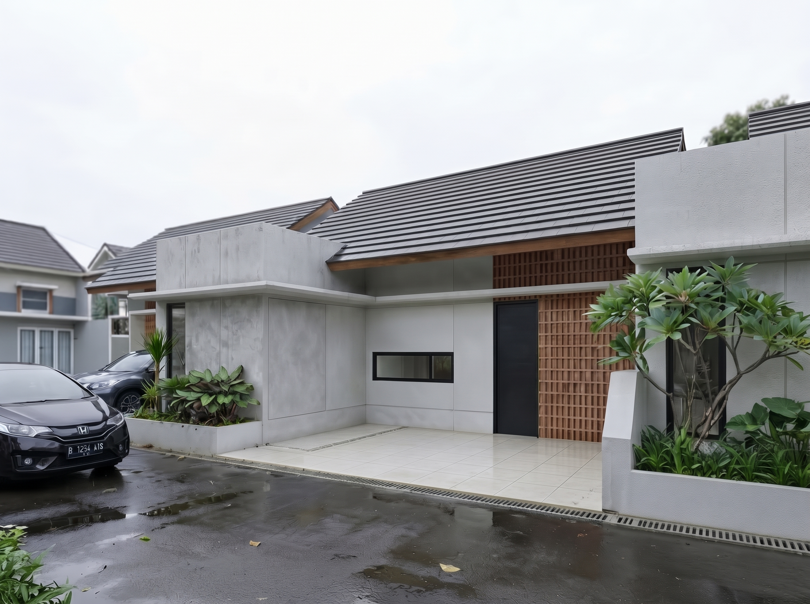
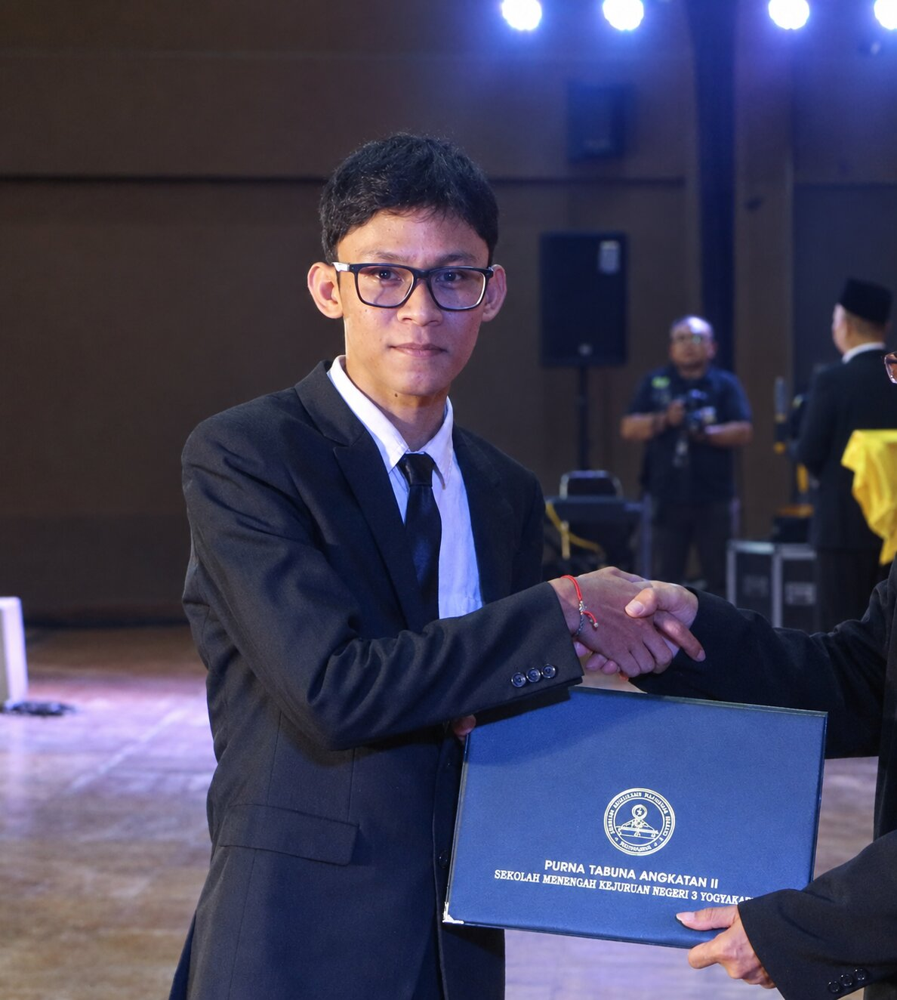
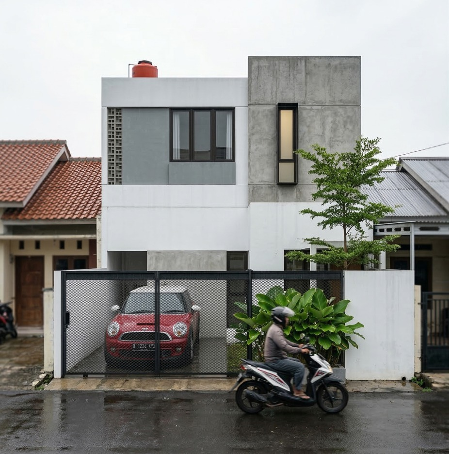
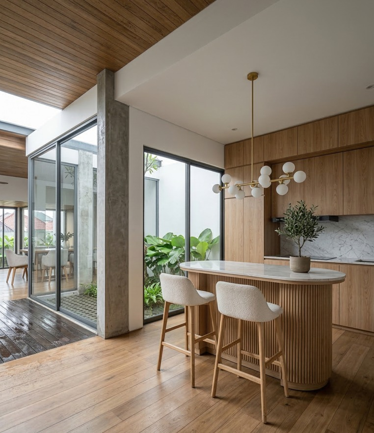
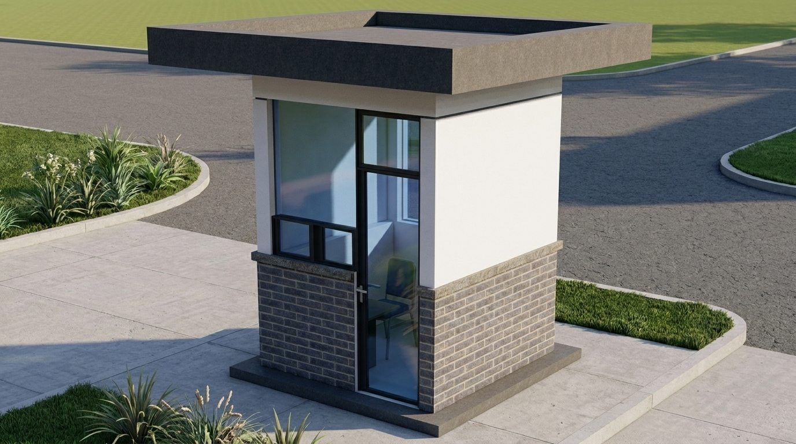
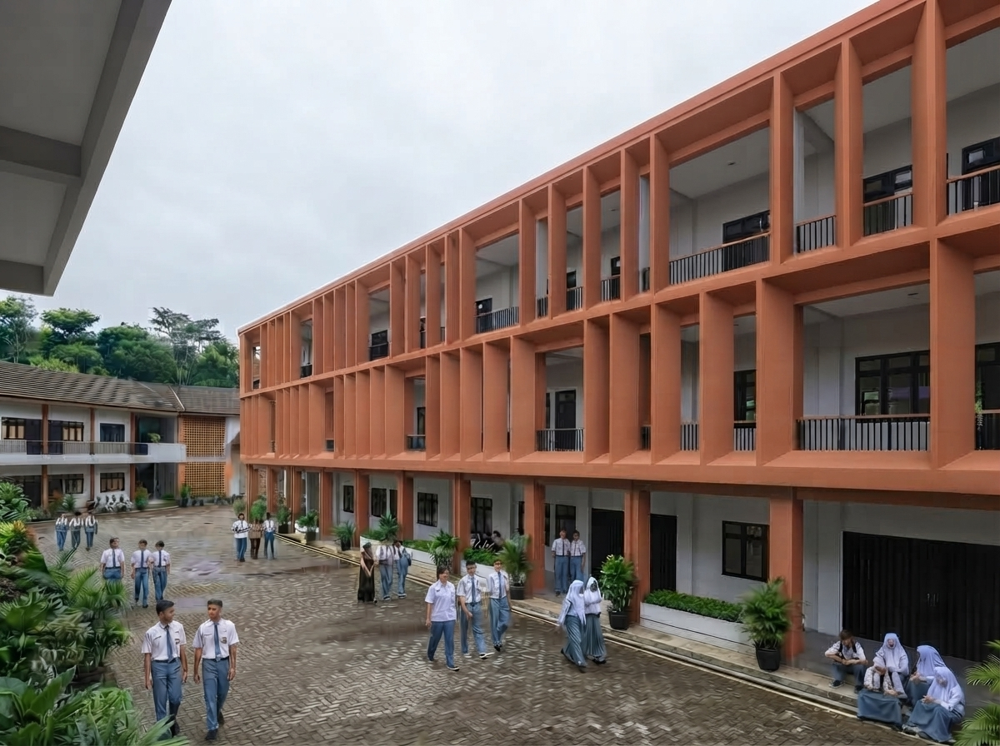
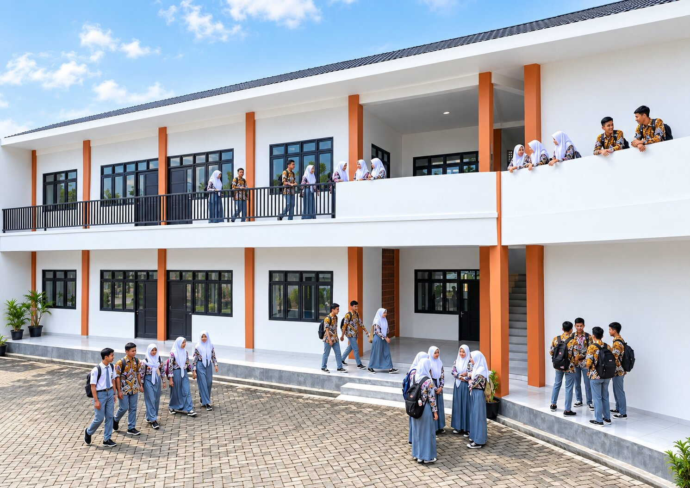

Denah
Rumah 1 lantai type 65
Skala: 1:50
Kertas: A3
Software: AutoCAD
Status: Final
Lulusan SMK jurusan DPIB dari Sleman, DIY. Suka menggambar
denah, arsitektur, dan detail furniture dengan AutoCAD.
Selalu belajar dan berkembang.

Saya Benico Orlando, lulusan Desain Pemodelan dan Informasi Bangunan. Terbiasa membuat gambar kerja 2D dengan AutoCAD — denah, tampak, potongan, hingga detail arsitektur dan furnitur — dengan mengutamakan ketelitian dan kerapian.
Di luar DPIB, saya juga sedang belajar coding dan membuat website, menggabungkan kreativitas desain dengan teknologi.






Saya siap memberikan informasi lebih lengkap mengenai pendidikan, skill, dan pengalaman saya melalui CV ini.